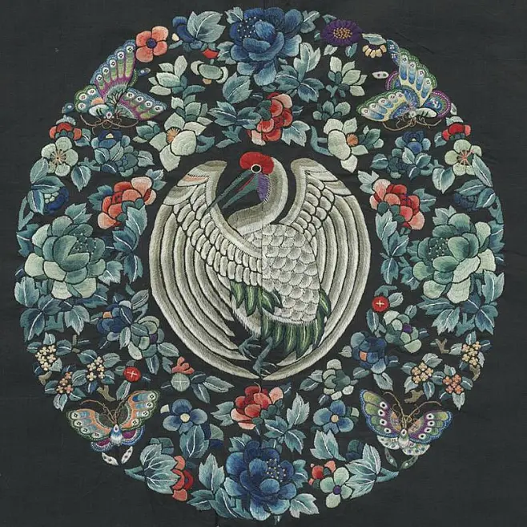

刺绣流派
刺绣作为一门独特的艺术形式，以其精湛的工艺成为了中国传统文化中一颗璀璨的明珠。在众多的刺绣流派中，有四种以其卓越的艺术成就，被誉为“四大名绣”，它们分别是苏绣、湘绣、粤绣和蜀绣。这四大名绣不仅代表了中国刺绣艺术的最高水平，也承载着深厚的地域文化。 苏绣发源于苏州吴县一带，以其精致细腻、色彩雅致而著称于世。苏绣的技艺特点在于“平、齐、细、密、匀、顺、和、光”，即针脚平整、线条齐直、绣面细密、色彩均匀、光泽柔和。苏绣的图案设计往往取材于自然景物和人物故事，如花鸟鱼虫、山水风景、历史典故等，通过细腻的针法和丰富的色彩，将自然之美与人文之韵完美融合。湘绣源自湖南长沙，湘绣的图案设计多取材于植物花鸟。湘绣的色彩运用十分讲究，以红、黄、蓝、绿等鲜艳的颜色为主，配以金线、银线等装饰材料，使得绣品更加富丽堂皇、光彩夺目。粤绣是广东地区特有的刺绣艺术，粤绣以其构图饱满、色彩华丽、针法繁复而著称。粤绣的图案设计多取材于自然景物。粤绣的针法复杂多变，包括平绣、垫绣、织锦等多种技法。蜀绣发源于四川成都平原，以其清新雅致、线条流畅而著称。蜀绣通过细腻的针法和淡雅的色彩，将巴蜀地区的自然风光展现得淋漓尽致。蜀绣的绣工们善于运用“晕针”技法，即在绣面上通过不同深浅的色线相互交织，形成渐变效果，使得色彩过渡自然流畅，层次分明。四大名绣不仅展现了传统文化的独特魅力，也承载了深厚的历史记忆。它们以其精湛的工艺，成为了中华民族传统文化中重要组成部分。在未来的发展中，我们应该继续加强技艺传承、推动创新发展，让四大名绣这一传统艺术形式，永远闪耀在中华民族的文化长河中。
